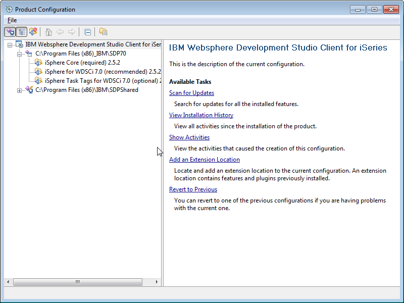

Uninstall Instructions WDSCi
Follow these steps to uninstall the iSphere plug-in from WDSCi:
- Start WDSCi 7.0. (On Windows Vista, Windows 7 or Windows 8
WDSCi has to be started with "Run as administrator").
- Select menu item "Help/Software Updates/Manage
Configuration".
- In the "Product Configuration" window, expand the
tree on the left side until you see iSphere objects, something like
this

- One at a time, right click each of the iSphere items, leaving
the iSphere Core (required) item to the last.
- On the popup, click [Uninstall]
- A window "Uninstall" with the message "Do you want to ..."
appears. Click "OK" and the iSphere object is uninstalled.
The
window "Install/Update" appears, with the message "You will need to
restart...…". Click [No], unless you are uninstalling the final
iSphere object..
Continue uninstalling the rest of the
iSphere objects. (You will proibably have to expand the tree on the
left again to see the rest of the iSphere objects.)
- When you uninstall the final iSpehere object, click [Yes] to
the "You will need to restart" message….
- After therestart the window "Problems" may appear with the
message "Could not restore workbench layout". You can ignore the
message. Click OK. For future starts of the IDE, the message will not
occur again.